CFP open11th Annual Workshop on Naval Applications of Machine Learning
Machine learning for the hardest problems facing Naval forces and their partners
A forum for interdisciplinary experts from government, industry and academia to discuss ongoing work on the theory and applications of machine learning.
Submit a short abstract (2,000 characters or less). Abstracts must be unclassified and may contain up to CUI. Sales pitches and overt product promotion will not be considered.
Talk or demonstration with Q&A
Short talk with networking Q&A
Publicly releasable only, networking Q&A
Propose a panel or special session
Presentation formats are subject to change.
Four days, two venues, two access levels.
Open to all registered participants.
Appropriately cleared attendees with a CAC or similar government ID, or able to obtain a DBIDS credential.
No fee to submit. Registration fee waived for government civilians and military personnel.